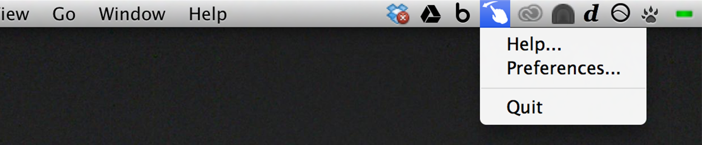
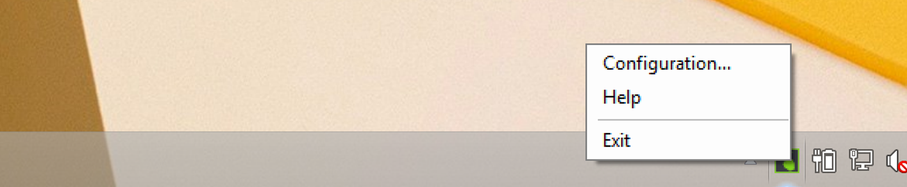

Bring your hand up and make a sideways pinch. When the arrows meet the scroll bar, you're ready to go.
To scroll slowly, pinch and pull with a small movement. (Just like scrolling on a touchscreen, you'll need to move your hand up to go down, and vice versa.)
To scroll quickly, pinch and throw in the direction you want to go. Be sure to fully open your hand when you're finished the throw.
Media Controls
Fire up your favorite media player.
Point at the screen, keeping your thumb tucked in tight to the palm, to reveal the media controls.
To activate play/pause, previous track, or next track, move the cursor through those parts of the menu.
To control volume, move down to the slider, then move left or right.
To exit, open your hand fully, or drop your hand out of the controller's view.
Application Switcher
To activate the Application Switcher, hold your hand flat over the controller, then flip your hand upside-down and raise the cursor through the target on the top of the screen.
Grab the application you want from the carousel and drop it into the center of the screen.
When you're finished, drop your hand out of the controller's view.
Configuration and Exiting
You can access Shortcuts from the system tray on Windows, and from the menu bar on Mac.
From there you can configure features, quit the app, and find a link back to this page.


Known Issues and Fixes
Shortcuts currently does not support multiple monitors. We plan to add support in a future update.
To run Shortcuts, you must have background applications enabled in your Leap Motion configuration settings. This is enabled by default when you install the Leap Motion software.
If you witness distorted screens on your Mac, please restart the Leap Motion software. We hope address this bug in a future update.
When trying to use the application with Adobe Illustrator, the application may occasionally hang. Clicking on the screen where the application switcher is running and hitting the escape key on your keyboard should exit the view.